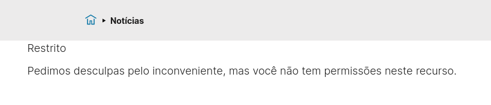
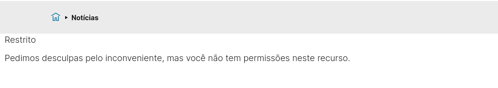

Publicando conteúdo do portal do volto na cmc
Contents
Publicando conteúdo do portal do volto na cmc#
A publicação de conteúdo no portal segue um fluxo, chamado de workflow.
Workflow de publicação#
O workflow de publicação padrão do Plone tem um mecanismo baseado em usuários, grupos, papéis e permissões. Para a demostração nesse treinamento foram criados 5 alunos para abranger a variedade de papéis do Plone.
Menu de ferramentas do usuário Aluno 1.
{kind=link}
Menu de ferramentas do usuário Aluno 2.

Menu de ferramentas do usuário Aluno 3.
{kind=link}
Menu de ferramentas do usuário Aluno 4.
{kind=link}
Menu de ferramentas do usuário Aluno 5.
{kind=link}
Permissões e papéis dos usuários alunos#
As permissões no Plone permitem que o usuário possa realizar certa ação. Os papéis são conjuntos de permissões que podem ser atribuídas a usuários ou grupos.
Para o treinamento foram configuradas alguns papéis para os usuários criados. O usuário Aluno 1 é Colaborador e Revisor. O usuário Aluno 2 é Editor e Revisor. O usuário Aluno 3 é Membro apenas. O usuário Aluno 4 é Leitor apenas. O usuário Aluno 5 é Revisor apenas.
Papéis atribuídos aos usuários criados.

Permissões padrão dos usuários alunos#
Os papéis atribuídos concedem as seguintes permissões para os usuários criados. O usuário Aluno 1 pode adicionar conteúdo e revisar. O usuário Aluno 2 pode editar e revisar. O usuário Aluno 3 pode apenas ler conteúdo publicado. O usuário Aluno 4 pode ler conteúdo privado. O usuário Aluno 5 pode revisar.
Permissões dos usuários criados.
{kind=link}
Workflow de publicação#
Os itens de conteúdo do Plone podem estar em 3 estados no workflow padrão. O estado privado, em revisão ou publicado. Um usuário membro só pode ver conteúdo publicado e não pode alterar nada. Um usuário leitor pode ver conteúdo privado, mas também não pode alterar o ítem. Um usuário contribuidor pode ver conteúdo privado, pode adicionar conteúdo, usar controle de versão, só não pode editar conteúdo de outros usuários.
Quando um usuário cria conteúdo, ele se torna o dono do conteúdo com permissão de alterar o conteúdo em qualquer estado que o conteúdo esteja. Um usuário editor pode editar conteúdo, usar o controle de versão, gerenciar propriedades do item de conteúdo, enviar conteúdo para publicação mas não pode adicionar conteúdo. Um usuário revisor pode enviar um documento para publicação ou enviar de volta ao autor, mas não pode alterar o documento.
Diagrama com o workflow padrão do Plone. O usuário autor cria um documento e pode realizar qualquer ação no documento, o estado padrão é privado. O usuário editor pode alterar o documento e enviar para revisão. Ao enviar para revisão o documento passa para o estado em revisão. No estado em revisão, o usuário revisor pode publicar ou enviar de volta ao autor para mudanças, o documento volta ao estado privado quando volta ao autor.
{kind=link}
Usuário anônimo acesso a noticias publicadas#
Quando o documento é publicado usuários sem autenticação, anônimo, podem ler o conteúdo.
Notícias visíveis para usuário anônimo quando estão publicadas.
{kind=link}
Usuário anônimo sem acesso conteúdo privado#
Quando o documento está em um estado privado usuários sem autenticação, anônimo, não podem ler o conteúdo.
Notícias indisponíveis para usuário anônimo quando estão em estado privado.
{kind=link}
Papéis e a vizualização de conteúdo#
De acordo com os papéis e permissões atribuídos ao usuário ele pode acessar conteúdo privado.
Visibilidade de conteúdo privado#
Os usuários Autor, Colaborador e Editor tem acesso a conteúdo privado, sendo que o Colaborador só pode ler o conteúdo. Os usuários Membro e Revisor não tem acesso a conteúdo privado.
Visibilidade de conteúdo privado para usuário Aluno 1.
{kind=link}
Visibilidade de conteúdo privado para usuário Aluno 2.
{kind=link}
Visibilidade de conteúdo privado para usuário Aluno 3, indisponível.
{kind=link}
Visibilidade de conteúdo privado para usuário Aluno 4.
{kind=link}
Visibilidade de conteúdo privado para usuário Aluno 5, indisponível.
{kind=link}
Visibilidade de conteúdo em revisão#
Os usuários Autor, Colaborador, Editor e Revisor tem acesso a conteúdo Em revisão. Atenção que o usuário Colaborador só pode ler o conteúdo e o Revisor pode enviar de volta ao Autor. O usuário Membro não tem acesso a conteúdo Em revisão.
Visibilidade de conteúdo em revisão para usuário Aluno 1.
Visibilidade de conteúdo em revisão para usuário Aluno 2.
Visibilidade de conteúdo em revisão para usuário Aluno 3, indisponível.
Visibilidade de conteúdo em revisão para usuário Aluno 4.
Visibilidade de conteúdo em revisão para usuário Aluno 5, indisponível.
Disponibilidade de botões de ação#
De acordo com as permissões de cada um são apresentados botões de ação específicos. O botão adicionar é um exemplo, só está disponível para quem pode criar conteúdo. O botão editar aparece para quem pode modificar o documento e assim por diante.
O usuário Aluno 1 tem a permissão de criar conteúdo, então o botão adicionar está disponível. Entretanto o botão editar não está disponível pois ele não pode alterar o documento. Ele pode navegar pelo conteúdo, portanto o botão de conteúdo também está disponível.
O usuário Aluno 2 não tem a permissão para criar documento, então o botão de adição está indisponível. O usuário Aluno 2 tem a permissão de modificar o documento, portanto o botão de edição está disponível. Ele pode navegar pelo conteúdo por isso o botão de conteúdo também está disponível.
O usuário Aluno 3 não tem permissão de criar conteúdo, não tem a permissão de modificar conteúdo e nem pode navegar pelo conteúdo, então nenhum destes botões está disponível.
O usuário Aluno 4 não tem permissão de criar conteúdo, não tem a permissão de modificar conteúdo e nem pode navegar pelo conteúdo, então nenhum destes botões está disponível.
O usuário Aluno 5 não tem a permissão para criar documento e não tem a permissão de modificar o documento. O usuário Aluno 5 tem permissão de navegar no conteúdo, então apenas o botão de conteúdo está disponível.
Disponibilidade de mais opções de ação#
Além dos botões de ação as permissões dão acesso a itens do menu de mais opções, que é aberto quando se clica no ícone de reticências (3 pontos seguidos).
Para o usuário Aluno 1 estão disponíveis as opções de Estado, Histório, Compartilhamento e Links e referências.
Para o usuário Aluno 2 estão disponíveis as opções de Estado, Histório, Compartilhamento, Gerenciamento de url e Links e referências.
Para o usuário Aluno 3 estão disponíveis as opções de Estado (somente leitura), Histório e Links e referências.
Para o usuário Aluno 4 estão disponíveis as opções de Estado (somente leitura), Histório e Links e referências.
Para o usuário Aluno 5 está disponível apenas a opção de Compartilhamento.
Estados#
As permissões também afetam o que cada usuário pode fazer em termos de transição de estados. O usuário Aluno 1 pode publicar o documento quando o documento está no estado privado.
O usuário Aluno 2 além de poder publicar o documento ele pode enviar para publicação. Quando o documento é enviado para publicação ele entra no estado Em revisão.
O usuário Aluno 1 pode enviar o documento de volta ao autor. Quando o documento é enviado de volta ele entra novamente no estado privado.
O usuário Aluno 2 pode enviar o documento de volta e também pode retirar o documento. Em ambos os casos o documento volta ao estado privado.
O usuário Aluno 1 não tem acesso ao documento quando ele está em revisão. O usuário Aluno 2 pode publicar, pode enviar de volta ou retirar o documento quando o documento está em revisão.
O usuário Aluno 3 não tem acesso ao documento nem no estado privado nem no estado em revisão. O usuário Aluno 4 tem acesso somente leitura ao menu de estados.
O usuário Aluno 5 pode revisar o documento e enviar o documento de volta ou então publicar.
Histórico#
O histórico também é afetado pelas permissões, o usuário Aluno 1 tem visibilidade ao menu de Histórico.
Ao clicar no item de menu Histórico o usuário Aluno 1 recebe uma mensagem. O acesso a esse recurso é restrito pois ele não tem permissão de ler o histórico de mudanças.
O usuário Aluno 2 também tem visibilidade ao menu Histórico.
O usuário Aluno 2 tem acesso a página do histórico de mudanças do documento.
{kind=link}
O usuário Aluno 3 não tem acesso ao menu e nem ao histórico de mudanças. O usuário Aluno 4 tem visibilidade ao menu de Histórico.
Ao clicar no item de menu Histórico o usuário Aluno 4 recebe uma mensagem. O acesso a esse recurso é restrito pois ele não tem permissão de ler o histórico de mudanças.
{kind=link}
O usuário Aluno 5 também tem visibilidade ao menu Histórico se o documento estiver em revisão.
O usuário Aluno 5 tem acesso a página do histórico de mudanças do documento se o documento estiver em revisão.
{kind=link}
Links e referências#
O usuário Aluno 1 pode ver o item de menu Links e referencias.
Ao clicar no menu Links e referencias o usuário Aluno 1 recebe a mensagem de que não é autorizado a ver os links e referências do documento.
{kind=link}
O usuário Aluno 2 pode ver o item de menu Links e referencias.
O usuário Aluno 2 tem acesso aos links e referencias do documento.
{kind=link}
O usuário Aluno 3 não tem acesso ao documento, exceto quando for publicado.
O usuário Aluno 4 pode ver o item de menu Links e referencias.
O usuário Aluno 4 tem acesso aos links e referencias do documento.

O usuário Aluno 5 pode ver o item de menu Links e referencias quando o documento está no estado em revisão.
O usuário Aluno 5 tem acesso aos links e referencias do documento quando o documento está no estado em revisão.
{kind=link}